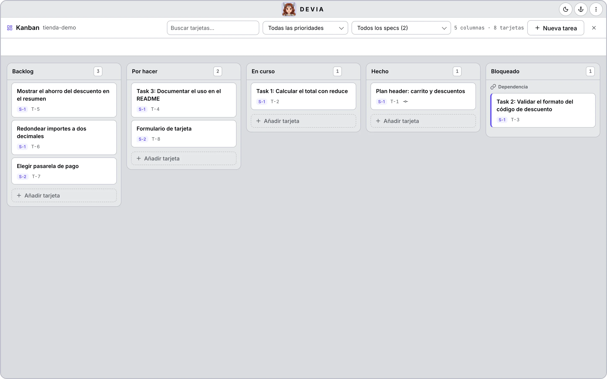

Ваши агенты кода в одном окне
Десктопное приложение для управления Claude Code, Codex, Gemini и другими.

-
Агенты и выполнение
Работайте с Claude Code, Codex, Gemini CLI, OpenCode, Cursor Agent, Copilot, Grok, Pi, Kimi, Hermes, Qwen, Qoder и DeepSeek или добавьте своего, если он поддерживает ACP. Переключайте агента посреди сессии и выбирайте между plan, apply и apply-yolo.

-
Контекст и память
Постоянная память между сессиями, история по проектам, а контекст, стоимость и токены всегда на виду. Собственный граф кода даёт агенту структуру проекта, а code mode выполняет скрипты только для чтения поверх ваших MCP-серверов.

-
Метод и планирование
Kanban для каждого проекта, который сам агент читает и обновляет, со спецификациями, задачами и зависимостями. Devia Method направляет работу, а интерактивные карточки задают вам вопросы, просят утвердить планы или проверить изменения, с любым агентом.

-
Git и ревью
Состояние репозитория, инлайн-диффы и смена ветки. Комментируйте строки диффа и отправляйте их агенту как запрос на ревью. До четырёх агентов параллельно, каждый изолирован в собственном git worktree.
worktree 1worktree 2worktree 3worktree 4
-
Удалённое управление и платформа
Управляйте агентами из Telegram, с отправкой файлов, пока Devia открыт. Встроенный терминал, Docker Compose и открытие в вашей IDE на Windows, macOS и Linux.

Всё на вашей машине
- Ваши сессии, память, kanban и конфигурация хранятся на вашем диске (
~/.devia-app/). - Без учётных записей и облака Devia.
- С вашей машины уходит только то, что CLI каждого агента отправляет своему провайдеру.
Скачайте Devia Desktop
Бесплатно и с открытым кодом (Apache-2.0), со всеми функциями.